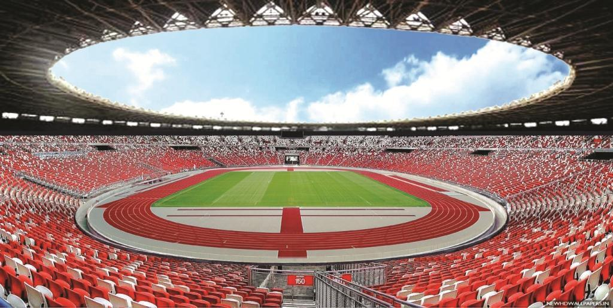

TUGAS 4
Nama : Maulana Farhan Farhan
NIM : 202055202032

Deskripsi :
FANTASTIS! FAKTA-FAKTA PEMBANGUNAN GELORA BUNG KARNO
Ide pembangunan Gelora Bung Karno pertama kali dicetuskan oleh Ir. Soekarno di tahun 1956 saat beliau berkunjung ke Moscow untuk menemui Nikita Khruschev.
Dalam memoar Memoirs of Nikita Khruschev: Volume 3, Khruschev menerangkan bahwa Sokearno mengutarakan keinginannya agar Uni Soviet membangun stadion di ibu kota Indonesia, Jakarta, yang akan menampung ribuan penonton.
Di tahun 1960, proyek ini mulai dijalan dengan melibatkan banyak spesialis-spesialis Soviet dan berhasil diselesaikan pada 21 Juli 1962, tepat sebelum penyelenggaran Asian Games yang keempat di tahun yang sama.